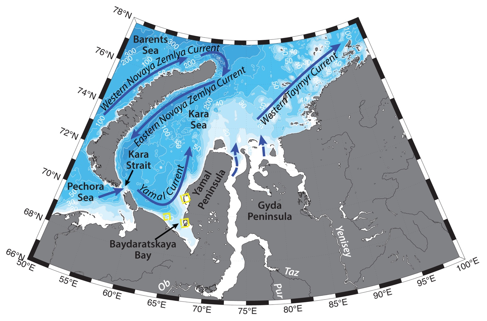

Schematic water circulation patterns and geographical place names in the Southern Kara Sea region. Adopted from Pavlov and Pfirman (1995), Zatsepin et al. (2010). Dashed yellow line marks the studied region.
Baydaratskaya Bay is a shallow bay with depth <20 m, and large number of islands and lagoons in the near shore area. Hydrography of the Baydaratskaya Bay is formed by the Yamal current and its hydrographic front, shallow depth, seasonal ice, Yamal Polynya, as well as wind forcing.
Compared to other coastal areas of Siberian Seas, freshwater discharge into Baydaratskaya Bay is rather small, as a result surface layer is usually saltier than 25 psu. Shallow depth also allows for the mixing of the whole water column during summertime, so that bottom waters become warmer 0 °C (Pavlov, Pfirman, 1995), which together with low variability in salinity facilitate biological productivity. During wintertime convective overturning lowers the temperatures and cold waters are formed on the Siberian Shelf. These waters are generally characterized by negative temperatures, high salinities, high nutrient concentrations and low oxygen (Pivovarov et al., 2003).
Yamal current carries modified Barents Sea water (e.g. T=~3.9 °C, S = 23 – 28; Johnson et al., 1997; Pivovarov et al., 2003) northeastwards through the Kara and Yugor straits (known in Russian as “Yugorskii Shar”) along the western slope of Yamal Peninsula (e.g. Pavlov, Pfirman, 1995; Zatsepin et al., 2010). Pavlov and Pfirman (1995) described that the current divides into several branches, one of which is joined by the river discharge and continues eastwards, joining West Taymyr Current (formed by Ob-Yenisey plume), while the main flow turns offshore towards Novaya Zemlya, participating in a cyclonic gyre in the southwestern Kara Sea.
Recent studies (e.g. Johnson et al., 1997; McClimans et al., 2000; Zatsepin et al., 2010) also agree, that upon entering Kara Sea, Yamal current turns seawards away from the Yamal coast to the northeast and flows along the eastern coast of Novaya Zemlya up to its northern end. But they also suggest, that the freshwater runoff of the Ob and Yenisey rivers forms an anticyclonic gyre near the mouths of the rivers and north of them with intensification of the northeastern transport at its western periphery; part of the waters of this gyre merges with the northeasterly current along the coast of Novaya Zemlya. Despite this, the precise current pathways and variability of the circulation and hydrology of the Kara Sea still need more investigation (e.g. Zatsepin et al., 2010). Currents also strongly depend on the freshwater runoff and the water exchange through the straits with the neighboring seas and the Arctic Ocean, and wind forcing is one of the most important factors influencing the circulation of the shallow Arctic shelf seas (e.g. Zatsepin et al., 2010; Harms and Karcher, 1999).
During wintertime land-fast ice forms along the coast on the shelf. Ice used to stay in the region for more than half a year (approximately from November to June), however in recent years of warming Arctic that might not be the case anymore (e.g. Nghiem et al., 2006; Kwok et al., 2009; Janout et al., 2015). The mobile ice is largely affected by the wind patterns – moving in the wind direction, except for the land-fast ice (Morris et al., 1999; Holt and Martin, 2001). Melting of the sea ice forms Arctic Surface Water mass, with salinities from 28 to 32 (Pivovarov et al., 2003).
Under the influence of southerly and southwesterly winds drift ice can get pushed offshore from the Kara coast and Yamal Polynya can form between stationary land fast ice and moving ice fields (Bardan, Korneeva, 2004). This system of stationary polynyas in the Kara Sea, known as North-East Passage has mean annual recurrence greater than 60%, and includes Yamal Polynya, Ob-Yenisey Polynya, Tsentralnaya Karskaya, Severno-Novozemelskaya, and Zapadno-Novozemelskaya Polynyas, as well as Vostochno-Novozemelskaya and Amderminskaya (Bardan, Korneeva, 2004). Flaw polynyas in the Kara Sea more often form in the beginning of winter, due to higher mobility of the ice. Polynyas are known regions of high biological productivity and concentration of marine life (e.g. Dmitrenko et al., 2010b).
Main tides in the southern part of the Kara Sea are semidiurnal lunar tides, with amplitude about 0.2–0.5 m. Tidal currents do not exceed 0.2 m/s; therefore, tidal mixing has limited influence on mixing of the water column (e.g. Kagan et al., 2010).